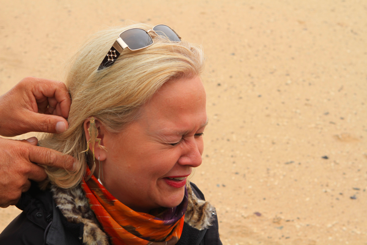
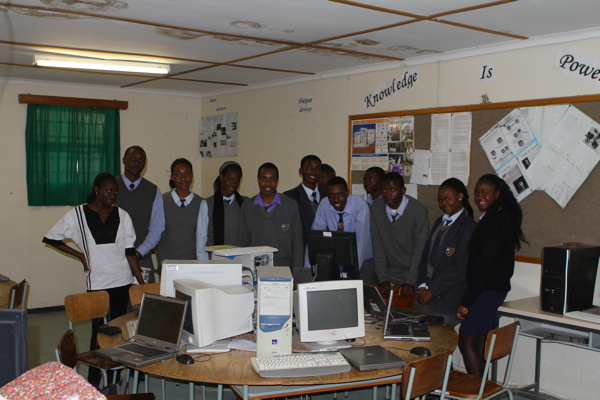
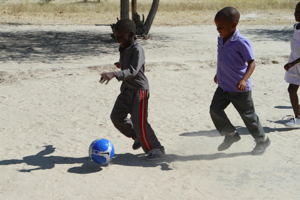

Posted:
It really does remind you of a scene out of Dune, and at times its like you are on another world. The sand is so fine, but yet its not dusty, its clean. This is the Namib Desert, the oldest desert in the world and home to the worlds largest sand dunes. The tallest of the dunes is over 1000 feet tall, you have to keep reminding yourself that its all sand! These aren't hills with a little sand on the top, this is a moveable work of sand art that is hundreds of feet high and changes all the time.
To start off our day we went on a Living Desert tour with Tommy, the owner of the company. He had a giant WWII vintage Land Rover (He collects land rovers -- and large belt buckles ) He's fifty something always wears shorts, runs like a bow legged cowboy and has more one liners than anyone I have ever met. He had us all in tears by the end of the tour. "All the desert creatures are just like a beautiful woman, you treat them gently and with respect and everything will be fine" he says with a grin. "When I met my wife, I said I am the head of the household, she said fine, I am the neck you will look where I point you." He was also extremely knowledgeable about the whole desert ecosystem.
You think what desert ecosystem? What lives in a bunch of giant piles of sand where they only get 15millimeters of rain a year? It turns out quite a lot, but you pretty much have to dig up everything out here that is alive. For the first 45 minutes of the trip it was pretty quiet because it was overcast and quite cool, Tommy kept jumping out of the land rover muttering, I just have to check on something. He would trot away up the dune, stop at a seemingly random spot and then scoop his arm down deep in the sand. Or he would run up to one of the dollar bushes and poke around with his sand wedge for a few minutes only to return to the vehicle saying "nothing!"
Finally, one of these little forays paid off, he put his hand behind his back and with a huge grin on his face beckoned for us to get out and join him. Our first specimen was a lizard of some sort that he talked about how it survived by burrowing in the sand, water comes from the fog that rolls in off the Atlantic, just a few drops are all that is required, it turns out it also makes its own water by a chemical reaction with the food it eats. Pretty cool. Then, the showman asks Mary to kneel before him ("I like it when women kneel in front of me" he says) Then he takes the lizard and lets it clamp onto her earlobe with its tiny little jaws. "New Earrings!!" Oh, my, all the women in the group are subjected to this little bit, and we get some great photos.
I ask him, how he knows where to dig, he says "I read the bushman daily newspaper" You see the very top layers of the sand are a combination of sand and magnetite which makes very interesting wave like patterns. Once you learn the signs to look for they are pretty obvious. He's been scanning for sidewinder tracks since the beginning, and although we've seen some tracks, no snakes yet. So, he stops the rover next to a particularly magnetite rich area, and hops out with his hand and something else inside a plastic grocery bag. We follow him a little ways up the dune and he drops down to his knees and proclaims, "now I will show you how we iron the desert." Of course he's got a magnet inside the bag and its picking up tons of the tiny magnetite particles. After showing us some artwork, and dumping a bunch of magnetite on Mary's arm to show us how he can make the hair stand up on end, he asks if anyone would like it? Sure! I'm thinking this would make a great plaything for my office. Now I'm wondering how in the world I'm going to get a tennis ball sized blob of magnetite through airport security!!??
Eventually we find our sidewinder, also buried in the sand, along with a horned viper, a gecko, and tow very interesting chameleons. All in all it was really interesting to see all this life where its pretty easy to assume that none exists. We continue our journey with Tommy finishing up the full morning with a joy ride through the sand dunes in his giant four by four. The scenery in the dunes is spectacular.
The only thing marring this perfect desert landscape is the tents from the Mad Max IV film crew that is running around and apparently doing lots of things they should not be doing in the desert, one of them being messing with Tommy's schedule -- "The idiot, in a match between a Range Rover and a human, who does he think is going to win?"
After leaving the Dunes Tommy dropped us off for the next part of our adventurous day. A Desert eXplorers ATV and sand boarding trip. After the requisite signing of the legal waivers we are quickly outfitted with hairnets and helmets. "Do I really need one?" I ask rubbing my very short hair. Josh's answer is short and practical, "Keeps out the lice Dad" Hmmm. Then we are given a choice between the automatic or manual clutch ATVs. We all wisely choose the automatics. After a few quick instructions about hand signals we are off! Driving through the dunes is amazing, the hardest part is that you really do have to pay attention and follow the leader or else there are lots of places where you could get stuck or end up upside down. As we go along we get more and more adventurous, taking the ATVs way up steep banks and straight down even steeper run outs. Its exhilarating and tons of fun.
After an hour or so of this we stop at a particularly tall and steep dune. This is our sand boarding stop. Sandboarding is done on a piece of particle board that our guide waxes up for us. you lay down on it, pull up the front and away you go, down the dune. Its a lot like going sledding in the winter only a lot drier. Also a lot like sledding is that its not really much fun to trudge back up the dune, your shoes filling with sand and sinking up to your ankles in the sand. Its a lot of work! But we had a lot of fun, and I got my first chance to use our new head cam, to capture my runs down the dune. Cool!
Now we have about an hour of ATV riding through the dunes left, but its getting to be 4:30 so the sun is getting a bit low in the sky and there are lots more shadows now, this makes it all a bit more tricky. We are almost to the very end when our guide suddenly motions us to stop and whips his ATV around and goes racing back. We all crane our necks to see whats going on. Its Ann, she's tipped her ATV over in that last little bumpy patch. Not only is our guide racing toward her but three other guides in blaze orange that were leading other groups have seen the accident and rush to her aid. After a few anxious moments we can see that she's up and walking, her trusty hand bag still still at her side. Jerry says it was a spectacular fall. Ann says all of her orifices are still full of sand. We're all just thankful that she walked away with nothing more than a twisted knee. Its a bit swollen and sore but she's still getting around. This is definitely a day we will all remember for a long time!
We finally get back to the guest house at about 5:15 tired, and very hungry, other than a few little candy bars and some trail mix we haven't eaten anything during the day. The rest of the group bought happy hour supplies and made a 7:00 dinner reservation, so we drink some champagne to toast Gregory and Ann's anniversary. We laugh about the fact that we had two anniversaries on this trip, but both occurred during our stays in decidedly unromantic accommodations! Finally we head out for dinner to the Tug, a seafood restaurant right on the Jetty. We enjoy some good food in a nice warm dry atmosphere before walking back and going to sleep in our somewhat less warm and less dry rooms at the guest house. We remark once again that we've said the same thing about so many of our days here in Namibia, "What a day! I'm going to remember this for a long time"
Posted:

The first adventure of the day was the Living Desert tour with Tommy. Tommy is a fabulous guide, we laughed our way through the tour as this guy is just one great one-liner after another. We saw lots of interesting desert wildlife, all of which lives in the sand. The photo is of Ann with a desert lizard clipped to her ear.
Along the way we also found an Chameleon, a sidewinder, a horned adder, and lots of different beetles. You just can't believe the beauty of the sand dunes. These are the largest in the world with some of them over 1000 feet tall.
Posted:
In the latest installation of our extreme sports fetish while traveling we really enjoyed the three hour ATV excursion into the sand dunes. This was our first opportunity to use our newly acquired helmet cam. enjoy! I'll give a more detailed report on this excursion in a separate post.
video/quicktimemov48036076.621
Posted:
Well, its really hard to pick out the photo highlights from this trip, but I decided to take a quick stab at it during my hour at the internet cafe today. So, here's a link to the flickr photoset. Hope you like it.
Posted:
If someone had told me six months ago that in the span of 24 hours I would see nine Lions, two Rhino, four Elephants, three Hyena, one Jackal, a Journey of Giraffe, a Dazzle of Zebra, and countless Wildebeest, Springbok, Oryx, and Impala I would never have thought it possible. But that is exactly what happened this last day. As Ann remarked, "whoever thought I would be so casual about seeing another Zebra"
On the drive into the park we got really excited about seeing a couple of Elephants and Giraffe in the distance, then Joey pulled off onto one of the many side roads that takes you to a water hole and we were able to get a little closer. But later we were to find out that that initial excitement was just an appetizer. A couple of water holes down the road, we pulled up and there were two huge elephants just standing 20 yards from the bus. And the Giraffe seemed to be everywhere along the side of the road. It was really incredible to get so close to all of the animals.
We stopped for a late lunch and then walked to the water hole at the Na… Rest Camp, someone had sited another elephant and it looked like we could get close to this one standing on the observation platform. However when I got out there it had disappeared into the bush. I had turned around and was headed back toward the bus when Josh Martin softly called me back -- "Rihno!" I got back but the Rhino had wandered into the trees so I was only able to get a partial shot of it with my camera. I have a great 70-200mm zoom, but I was now wishing I had upgraded to the new 100-300 model!
When we got to our rest camp we were all planning to sign up for an open air Jeep excursion. It was a little confusing, but our options were to go out at 5:30AM, midday, or an evening excursion starting at 18:30. I don't think any of us was particularly excited about getting up for another early morning drive, so lots of conversation ensued. In the end we all booked the 5:30AM tour and were not disappointed. Remember that we are in Africa, so even though the days are long in the Northern Hemisphere we are at some of the shortest days here. At 5:30 it was still completely dark. However we were treated to a spectacular view of Venus and Mars. Our guide and driver for the morning was named Samuel, he's been working in the park for 20 years and does an amazing job of spotting the game. We told him that we really wanted to see some cats and he smiled and told us that what you see on any given day is mostly luck.
We drove for quite a while in the dark with Samuel illuminating our path with a red handheld light. It was COLD, we all had on many layers including winter coats, and luckily Samuel provided us with ponchos to put over our legs for another layer of warmth. We never really did see anything in the dark. At the first water hole we stopped we didn't see anything so we drove around to the other side of the water hole where Samuel said 'Lion!' We looked and at first none of us could see it, but eventually we all saw what he was pointing to. A male lion laying down at the edge of the water hole munching on something that was freshly killed. As I was watching the lion through my long lens I noticed something much darker pop up from the grass behind the lion. Samuel confirmed that it was a Hyena, in fact there are probably several of them waiting for their chance to eat whatever the lion leaves behind. We also discovered that there was another lion that had been lying a few meters away from the first. We were just starting to pull away when we were rewarded with a final view of the Lion who stood up and took a big stretch.
We drove on through herds of Zebra and all kinds of antelope when Samuel spotted another pair of Lions just on the edge of the pan, these were farther away than the first but the light was much better so I was able to get some good pictures and really zoom in on these. In fact it turned out that there were seven Lion in this area, and Samuel said probably two more that we didn't see, because the pride is eleven, and we had already seen two of them at the previous water hole. The drama of seeing this group of Lions was heightened by one lonesome and apparently suicidal Springbok. This poor creature seemed completely unaware of the Lions and just kept wandering closer and closer. Samuel said that Lions only strike if they know they won't have to chase their prey for more than 100 meters, but would could see the lions get very still and very low to the ground, they clearly had not missed this Springbok. Eventually the little guy came to his senses and escaped with his life, at least for today.
When we got back from the drive we went to breakfast and we have spent the rest of the day sitting and observing at the water hole, or lying around the pool area soaking up some of the warm midday and afternoon sun. We are hoping for a return of the Rhinos that appeared here last night, but as Samuel said its mostly luck as to what might show up on any given day.
And just as I finished writing those words we were rewarded. A giraffe came ever so slowly and cautiously out of the trees to get a drink. This is a really amazing process. First she approaches the water hole very slowly, checking each way several times. Then she must get in position to drink, which involves spreading her legs very wide so her neck can reach the water, but you can tell this puts the giraffe in a very vulnerable position so much stopping and starting and looking around ensues as she prepares to drink. And when she does its a long one. Twenty seconds maybe with the mouth in the water, and then with a mighty shake she raises her body up and assumes a position that looks like she's ready to flee. With all of us sitting up here taking pictures and whispering she is very cautious of us. What a site, this whole trip to the water hole probably took just over an hour between her cautious approach to the hole and then multiple long approaches and drinks. Patience is a virtue.
Posted:
After a long day of driving and viewing the animals we pulled into our accommodations at Halial Rest Camp in Etosha National Park. Although it was a long dusty day of driving we saw many game animals (see my related post) on the drive so it was well worth it.
We had made the decision in the morning to have a Braai for supper tonight, so we bought steaks and pasta and some supplies for making sauce at the Pic-N-Pay in Oshikati. Based on the descriptions of our Bush Chalets we knew that we had an outdoor grilling area (the Braai) along with cooking supplies and utensils in the room. The Bush Chalets are just fantastic, ours was two bedroom, with a living area and separate toilet and shower areas. All of which looked quite new. The only problem was that the cooking supplies were missing! We all had some plates and bowls and silverware, but no pots or pans suitable for cooking.
COOL!! This is like a Quick Fire challenge on Top Chef. We got some firewood and kindling from the gift shop and talked Joey out of his lighter for five minutes to get the fire going. We slit open the steaks and added some namibian barbecue dry rub to them along with a little salt and pepper, let them site for a while and the steaks are taken care of.
But how do you cook pasta and pasta sauce with no pots and pans. Well, we all had hot pots in our room for boiling water to make coffee or tea. If you can boil water you can cook noodles. To make the sauce we just opened the cans (thank God for swiss army knives) and set them next to the fire. Add a helping of noodles to the bowl, spoon out some tomatoes and some pureed tomatoes and a few mushrooms from their respective cans and viola you have a nice sauce for your noodles.
Add in some raw veggies, and some grilled red and yellow peppers and you have a regular feast. Of course a couple of glasses of wine at happy hour probably helped make it all taste better than it was but it will definitely go down as one of the more memorable meals of the trip. After supper we continued to sit around the fire and talk and share great memories with each other. It was a great night, thanks friends.
Posted:

Here's a picture of my new friends in the computer science class at Oshigambo High School. Their teacher, Alice, is an amazing person. As you can see they are not working with the most modern of computers, but they are doing some really good projects. The students are learning both Visual Basic, and Turbo Pascal. They were all eager to show me their projects, which are year long projects. I saw everything from payroll systems to equipment ordering systems. These students must first design the entire user interface, and then develop a system flowchart along with a set of written requirements. Once all of that is done they start building their system using visual basic and access. I wish more American schools would get this far in their computer science curriculum.
We were getting a short tour of the high school when we walked into the computer lab. Their teacher said that I was a computer science teacher from the USA. They immediately pulled me in and I was surrounded by the students. When I told them I was from Luther College it was as if I were some kind of rock star. Thanks to Tim Peter and Greg Peterson for brining groups of students to this high school before. They all well remembered the singing group that was here from Luther 2 years ago. I signed up a dozen students to get additional admissions information. I'm going to ask Scot for a bonus for my recruiting efforts today. I wish that I would have had more time, to spend with the class. Many of them had questions and were testing the limits of my pathetic Visual Basic skills.
I was able to give them a demonstration of the Python eBook I've been working on, so maybe that will become a resource that they can use in the future. I know that after seeing their computer lab everyone was pleased that we were able to bring them 24 laptops and 50 graphing calculators.
Posted:

Our second stop of the day yesterday was at the Rev. P. Hanock Kindergarden.
This 'school' was a metal building that was a maximum of 12 feet by 12 feet and barely tall enough for Josh Martin to stand in. This school housed 24 students, about half of which had chairs to sit in. The students were prepared for us to come, and gave us a concert and a number of demonstrations of their ability to count, and name the colors and the shapes. It was really impressive and they were all so eager to show off their knowledge. From the very beginning they instill in these learners the importance of knowledge and going to school. "Knowledge is our future" they sing.
In addition to this small classroom there are outhouse facilities donated by Luther alums Orv and Cathy Johnson. The Luther connections here in Namibia are many and strong. It is almost heartbreaking to see what a relatively small amount of money by American standards can accomplish over here. We left the kindergarden some blocks and a soccer ball. The look on the children's faces when they emerged from the building to kick the ball around was another of those moments that make you realize what this trip is all about.
Posted:
Here we are back on the bus after a stop at the woodcarvers market all of us laughing our heads off. About 70km North of Windhoek we stopped at the woodcarvers market. In my mind I had a vision of a sedate little market where Namibian men were sitting and carving interesting wooden masks and bowls. What ensued was the first "holy shit" comment of the day from one of our co-travellers. While Jane went across the road to the market, I went to the coffee shop to get some coffee. As Josh and I crossed the road I was approached my a young man who said "I have your wife" A swarm of young men descended on us, come to my shop, come to my shop, the next 20 minutes were pure chaos of bargaining in both US$ and Namibian $.
Now that the dust has settled a bit it appears that the best strategy is to offer somewhere less than half of what they first tell you is the price and work your way up as slowly as you can. However, we all learned that the hard way. Our first purchase of this manic shopping spree was a marble bowl. The asking price was N$650, we countered with N$400 and settled at N$500. Way to high. As Jane was literally pulled out of that shop and on to another shop I saw an elephant hair bracelet. I didn't have any Namibian dollars left so I told him I would buy it with US$. He said $70 US for the bracelet. I told him no way; but by then the bracelet was already on my arm. So I told him the leather bracelet I had cost less than $20 he said make me an offer, so I told him $10. But its made from Elephant hair!! With that he wrote $50 on his arm. No way, I said so I came up to $15. Eventually we settled at $20. I really do this is one of the best deals I've ever made.
As all of this was taking place young men were trying to lure Mary (Ethan's mom) to the outskirts of their little woodcarving village. Mary resisted with the help of her sister Carol who exclaimed, "I'm not letting you get sold into white slavery" Mary was the smartest among us as all she purchased was a single woven basket.
Meanwhile, Jane was embroiled in making a bargain for a couple of giraffes. We were rapidly running out of cash, and she was desperately trying to get back to the first stall where she had found a bowl she really liked. We ended up with the giraffes and two bowls. Now this young man grabbed the bowls and told us he'd wrap them for us. As he was wrapping them he insisted that Jane look at the Salad tongs in his stall. He proceeded to hold our bowls hostage until Jane finally bought two sets for US$10. Meanwhile Josh was standing outside the stall saying Mom, we have to go, the bus is going to leave. Apparently this is a common ploy as one young man was stuffing marble candle holders into Jerry's backpack. Ann had to pull them out and pull Jerry out of the stall in order to escape.
Jane is now trying to sell two of the salad tongs she bought to Josh Martin. She told him she'd sell him the one pair for $20 US. Just think of your mother she said! If you brought these home to her she'd know you were thinking about her. So, Karen, if you want some Namibian salad tongs just let us know, we'll make you a really good deal!
I think at the end of the session we had spent about $100 US, or 800 Namibian dollars. Even if we overpaid for every item it was well worth the price just for the experience. Plus we figure we are helping these guys make their living and propping up the economy of Okahandja. Josh Miller and Josh Martin were the only two people who didn't spend any money. Josh had 20 people approach him, and he just kept telling them, I don't have any money. I don't have any money.
Posted:
The first stop on our free day in Windhoek was at the school for the blind. We had brought two suitcases of brail books (many Goosebumps stories) with us to take to this school. We drove up to the school on a short dirt road, and waited a few minutes while Ann and Ethan went to check in with the principal. It was a a really nice school. Its interesting to see the design because the hallways between the classroom are all outside.
As I was walking in this young man introduced himself to me, his name was Simon. I shook his hand and introduced myself as Brad, and before I knew it I was mobbed with students shaking hands and introducing themselves. They were great and so polite and happy to meet us that it really made me feel happy that we were here.
We got a tour of many of the classrooms. We saw some very young students learning how to read braille by using a system of blocks. Put the round blocks in the right holes for a particular letter. The number of the hole corresponded to a key on the keyboard. So if you put a block in hole 1 and 5 then you press keys 1 and 5 on your keyboard at the same time.
We met many of the teachers. None of whom had any particular training in teaching blind or deaf children. They were all teachers who were just looking for an extra challenge and ended up here. What the students lack in sight or hearing they make up for in their eagerness to learn. Many of them, sadly, come from homes where their parents don't know how to cope with a disability and so they are suffering from very low self esteem or depression.
I met Anne, who is the computer teacher at the school. She showed us their computers, which were extremely old. However she couldn't turn any of them on because the school had been without power for several days. They were promised that it would be back on by last night, but nobody really knows if that will be the case or not. She said she mainly teaches them word and excel, but also tries to teach them a little bit of programming, "so that they know about algorithms." When I asked her what language they program in, she said Turbo Pascal! Jane and I both had the same reaction, I don't think people have been teaching pascal for years. I told her a little about my textbook project, and at the end of the day we left four laptops for the school, so hopefully the students can maybe start to learn a little Python.
Mr. Engelbrecht, was a young male teacher with a big smile who was just so happy to see us and walk around and talk with us and tell us about the school. The Principal is a force of nature and at one point provided the quote of the day. Right after we had finished singing to a group of second graders she remarked in a very pointed tone: "Mr.Englebrecht, don't you have somewhere else you should be" Apparently Mr. E was letting his own students run amok while talking to us.
The highlight of the tour was when we sang to this second grade class. They started clapping for us after the first time through and as I looked around our group I realized that I wasn't the only one singing with a lump in their throat. The kids were just beaming with joy! Apparently when they have visitors they usually do a little program, so for us to sing to them was something really special. It was one of those moments that confirmed that this trip is all worthwhile.
The rest of the group stayed on at the school for the blind, but Gregory and I were off with Mr. Usko Shivute to visit the International University of Management. We had a very nice meeting the leadership of the school, to see if there are any ways that we can collaborate. ONe interesting fact we learned was that out of 180 some faculty only 7 have their PhD. So they are very interested in Faculty development.
After our meeting we had a tour of the facilities, and we met the chief examination officer. I was very interested to learn that all exams for all classes must be reviewed and approved by the examination officer's group. Of course this means that you have to have all your exams made before the semester even starts. I can't imagine teaching that way!
From there we went to UNAM -- the University of Namibia. I had a meeting scheduled with the HOD of computer science. Ms. Kauna Mufeti. The plan was for me to give a talk (A practice talk for me) about the eBook project. Sadly, the Dean had rescheduled the faculty meeting from morning to afternoon, so many of the people that would have been at the talk were now required to be at the faculty meeting -- which is compulsory. Sadly for my Namibian counterparts they do not have a tenure system, so when the dean makes a faculty meeting compulsory, you really do have to go. Nevertheless we had a great meeting together with a few people in the department and made some great connections. I hope that we are able to arrange some kind of collaboration to work together.
Meanwhile, Gregory was supposed to meet with the HOD of music, but tracking down his counterpart was a bit more difficult. In what Greg described as a typical Namibian sequence Kauna called person after person, office after office before we finally located someone for him to meet with. It turned out to be just the right person, and so when he comes back in 2014 they will meet with some faculty at UNAM.
We didn't get back to the Hotel Safari until almost 5:00. So we had a few minutes to rest before enjoying a happy hour get together in the Peterson room. We exchanged stories of the day and laughed together about our experiences with 'African Time' and then at 7:00 we headed out the door to Joe's beer shack. This is a great restaurant, and quite famous in Windhoek. Parts of the restaurant are open to the sky and have roaring campfires going to keep everyone warm in the cool Namibian night. Other parts are covered, but all of it is great. The menu is full of opportunities to try various kinds of African game. I ended up with a dish that had Ostrich, Springbok, and Oryx. Served in a white wine sauce with "A tot of Whitblit" What is a tot of Whitblit you may ask It turns out that the correct question to ask is how much is a tot? A tot is roughly the same as a shot, so in the middle of all of this game you get a shot of some liquor called Whitblit, which my spell check keeps wanting to correct to whitebait -- somehow seems appropriate. We had lots of fun with Ethan trying to surreptitiously take a picture of Ann sipping her Whitblit. Although she's officially retired, she seems to think she can keep Ethan from graduating if any pictures of the former Dean of Students are posted on Facebook. I think Ethan may take that as a challenge.
Others in the party had Zebra, Crocodile (a bit fishy) and other African game animals. Maybe even a regular old beef stake. We ate and laughed and had a great time. When desert time finally came around there were many orders of Don Pedro -- which is a milkshake with some liquor added. In our case we went with the Amarulo which is the African equivalent of Bailey's Irish Cream. Delicious!!